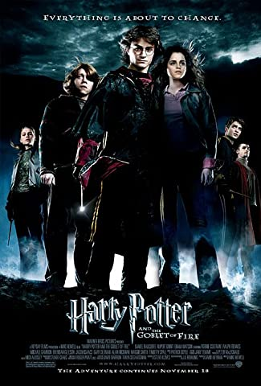

Yeşim Ezgi Şeref
Hakkımda
Merhaba ben Yeşim Ezgi Şeref! Eskişehir'de yaşıyorum.
25 yaşındayım. Bir şeyler öğrenmeye bayılırım.
İp atlamaktan çok hoşlanırım.
İlgi Alanlarım
Kitap
- Cesur yeni Dünya
- Kırmızı Pazartesi
- Bir İdam Mahkumunun Son Günü
- Koku
Müzik
- Riverside
- Queen
- Mor ve Ötesi
- The Pineapple Thief
- Gazpacho
Dizi
Defalarca izlesem de izlemekten keyif aldığım film Harry Potter Serisi
Harry Potter Film Serisindeki Beni En Çok Heyacanlandıranı
